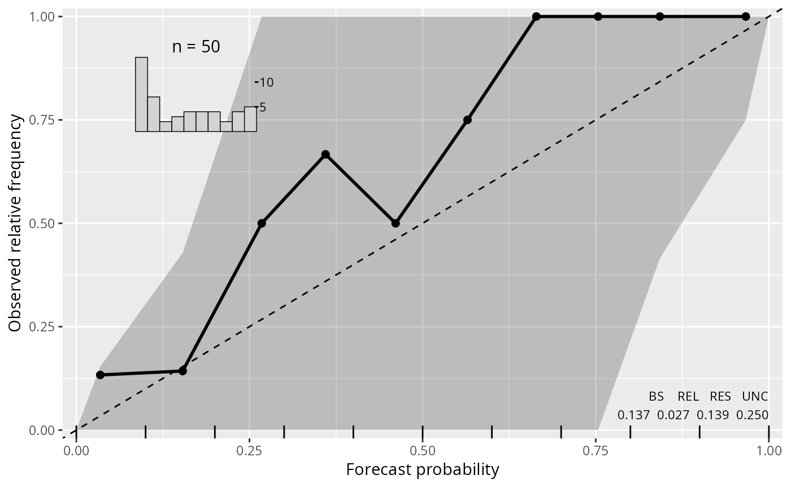
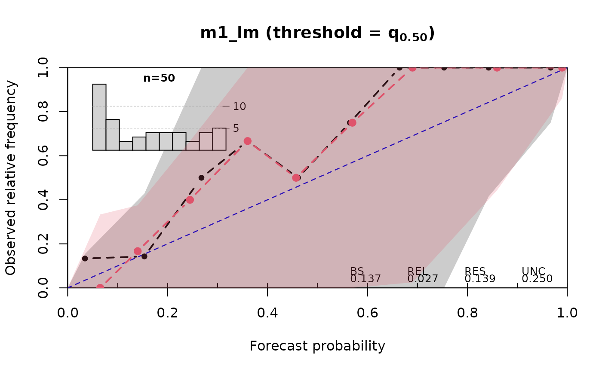
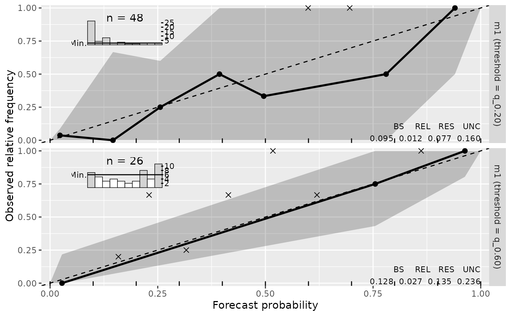

plot.reliagram.RdGeneric plotting functions for reliability diagrams of the class "reliagram"
computed by link{reliagram}.
# S3 method for reliagram
plot(
x,
single_graph = FALSE,
minimum = 0,
confint = TRUE,
ref = TRUE,
xlim = c(0, 1),
ylim = c(0, 1),
xlab = NULL,
ylab = NULL,
main = NULL,
col = "black",
fill = adjustcolor("black", alpha.f = 0.2),
alpha_min = 0.2,
lwd = 2,
pch = 19,
lty = 1,
type = NULL,
add_hist = TRUE,
add_info = TRUE,
add_rug = TRUE,
add_min = TRUE,
axes = TRUE,
box = TRUE,
...
)
# S3 method for reliagram
lines(
x,
minimum = 0,
confint = FALSE,
ref = FALSE,
col = "black",
fill = adjustcolor("black", alpha.f = 0.2),
alpha_min = 0.2,
lwd = 2,
pch = 19,
lty = 1,
type = "b",
...
)
# S3 method for reliagram
autoplot(
object,
single_graph = FALSE,
minimum = 0,
confint = TRUE,
ref = TRUE,
xlim = c(0, 1),
ylim = c(0, 1),
xlab = NULL,
ylab = NULL,
main = NULL,
colour = "black",
fill = adjustcolor("black", alpha.f = 0.2),
alpha_min = 0.2,
size = 1,
shape = 19,
linetype = 1,
type = NULL,
add_hist = TRUE,
add_info = TRUE,
add_rug = TRUE,
add_min = TRUE,
legend = FALSE,
...
)logical. Should all computed extended reliability diagrams be plotted in a single graph?
additional graphical
parameters for base plots, whereby x is a object of class reliagram.
logical. Should confident intervals be calculated and drawn?
graphical parameters.
further graphical parameters.
an object of class reliagram.
graphical parameters passed for
ggplot2 style plots, whereby object is a object of class reliagram.
Reliagrams evaluate if a probability model is calibrated (reliable) by first partitioning the forecast probability for a binary event into a certain number of bins and then plotting (within each bin) the averaged forecast probability against the observered/empirical relative frequency.
For continous probability forecasts, reliability diagrams can be plotted either for a pre-specified threshold or for a specific quantile probability of the response values.
Reliagrams can be rendered as ggplot2 or base R graphics by using
the generics autoplot or plot.
For a single base R graphically panel, points adds an additional
reliagram.
Wilks DS (2011) Statistical Methods in the Atmospheric Sciences, 3rd ed., Academic Press, 704 pp.
link{reliagram}, procast
## speed and stopping distances of cars
m1_lm <- lm(dist ~ speed, data = cars)
## compute and plot reliagram
reliagram(m1_lm)

## customize colors
reliagram(m1_lm, ref = "blue", lty = 2, pch = 20)

## add separate model
if (require("crch", quietly = TRUE)) {
m1_crch <- crch(dist ~ speed | speed, data = cars)
lines(reliagram(m1_crch, plot = FALSE), col = 2, lty = 2, confint = 2)
}
#> Error in polygon(na.omit(c(ifelse(extend_left, 0, NA), d[min_idx, "x"], ifelse(extend_right, 1, NA), rev(d[min_idx, "x"]), ifelse(extend_left, 0, NA))), na.omit(c(ifelse(extend_left, 0, NA), d[min_idx, "ci_lwr"], ifelse(extend_right, 1, NA), rev(d[min_idx, "ci_upr"]), ifelse(extend_left, 0, NA))), col = set_minimum_transparency(plot_arg$confint[j], alpha_min = plot_arg$alpha_min[j]), border = NA): plot.new has not been called yet
#-------------------------------------------------------------------------------
if (require("crch")) {
## precipitation observations and forecasts for Innsbruck
data("RainIbk", package = "crch")
RainIbk <- sqrt(RainIbk)
RainIbk$ensmean <- apply(RainIbk[,grep('^rainfc',names(RainIbk))], 1, mean)
RainIbk$enssd <- apply(RainIbk[,grep('^rainfc',names(RainIbk))], 1, sd)
RainIbk <- subset(RainIbk, enssd > 0)
## linear model w/ constant variance estimation
m2_lm <- lm(rain ~ ensmean, data = RainIbk)
## logistic censored model
m2_crch <- crch(rain ~ ensmean | log(enssd), data = RainIbk, left = 0, dist = "logistic")
## compute reliagrams
rel2_lm <- reliagram(m2_lm, plot = FALSE)
rel2_crch <- reliagram(m2_crch, plot = FALSE)
## plot in single graph
plot(c(rel2_lm, rel2_crch), col = c(1, 2), confint = c(1, 2), ref = 3, single_graph = TRUE)
}
#-------------------------------------------------------------------------------
## determinants for male satellites to nesting horseshoe crabs
data("CrabSatellites", package = "countreg")
## linear poisson model
m3_pois <- glm(satellites ~ width + color, data = CrabSatellites, family = poisson)
## compute and plot reliagram as "ggplot2" graphic
reliagram(m3_pois, plot = "ggplot2")
